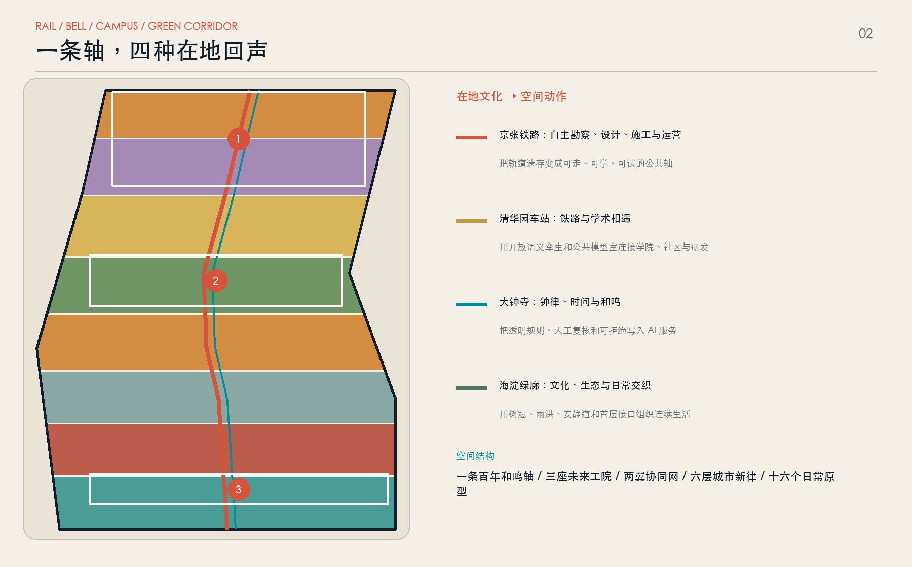
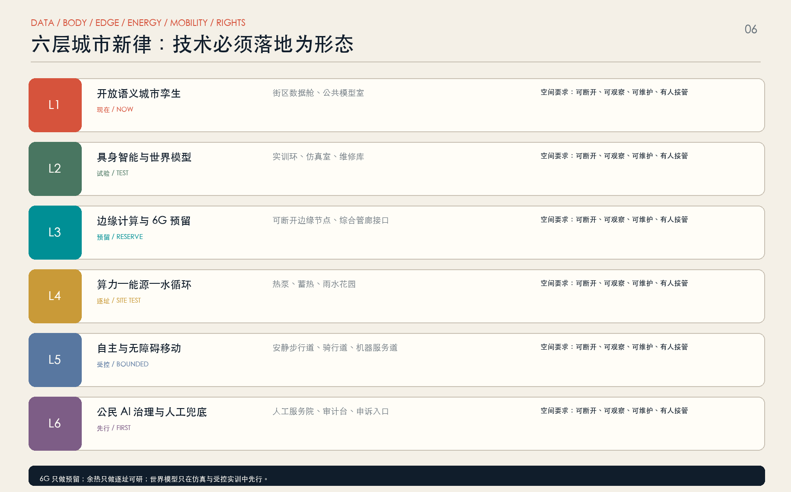
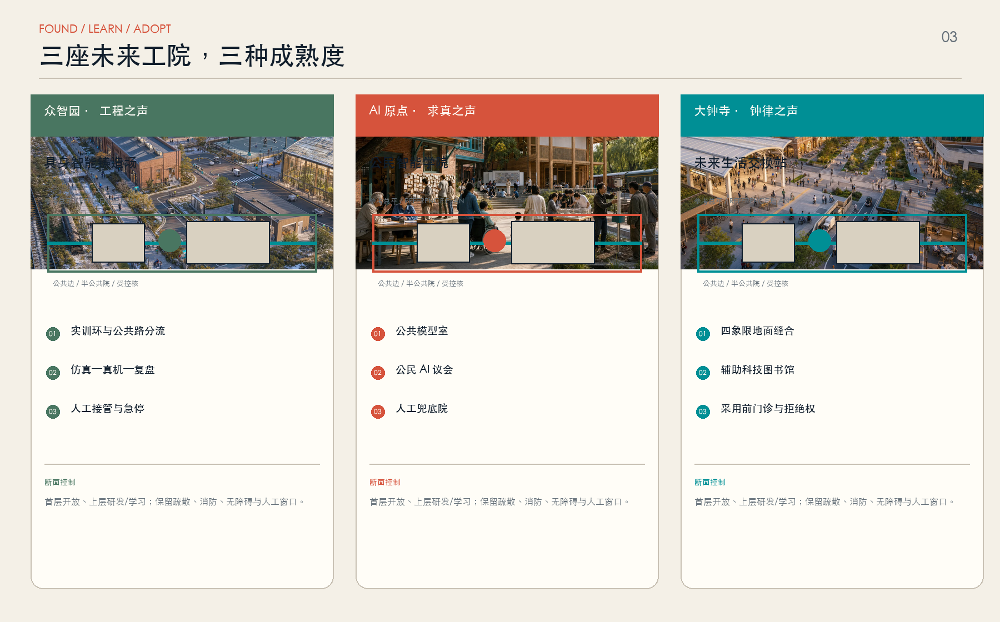
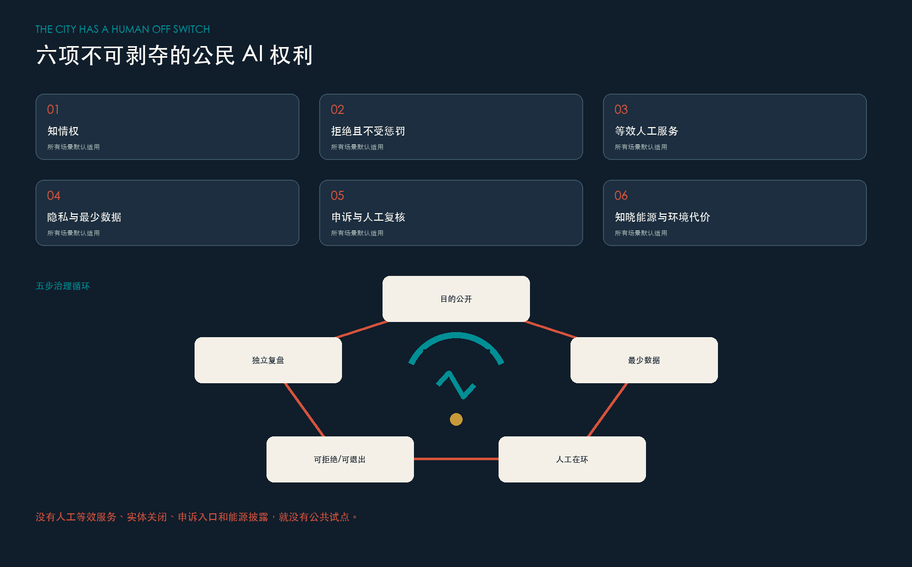
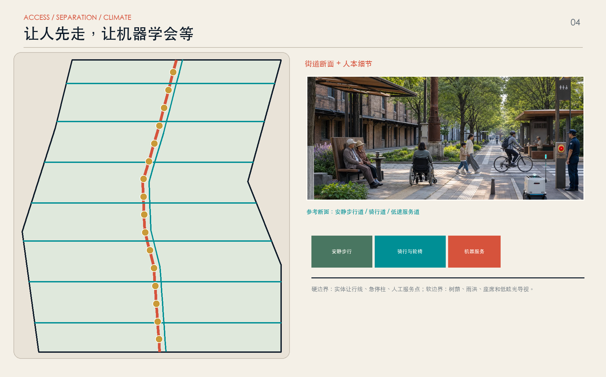
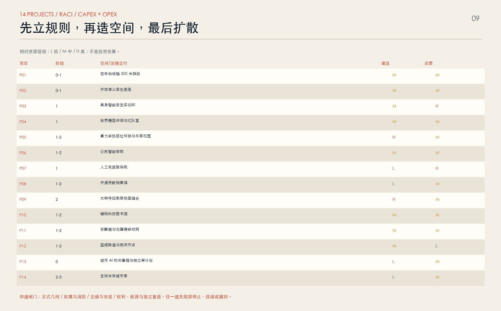
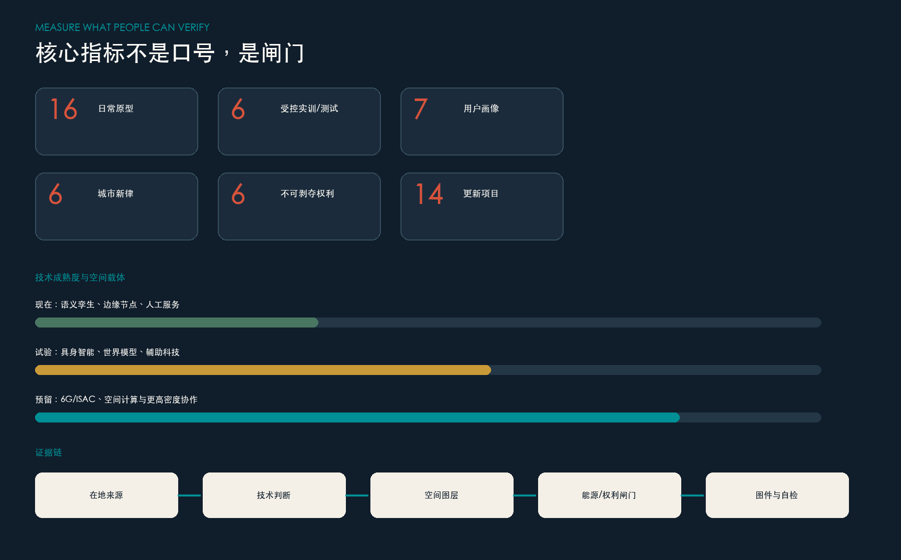

THESIS / 命题
让技术听见人的声音
京张和鸣把铁路遗产、钟律文化、学院路求真、中关村创新和社区日常放进同一套城市操作逻辑：先模拟，再小规模实训；先公开目的，再获得授权；运行中可审计，失败时可退出。
STRUCTURE / 总体结构

在地来源：海淀公开文本、清华园车站史料、大钟寺文物局资料；技术趋势只支持方法，不支持本地采购或部署承诺。
TECH STACK / 六层城市新律
技术不是外挂，是空间、能源与责任的联合系统
| ID | 层级 | 空间载体 | 底线 |
|---|---|---|---|
| L1 | 开放语义城市孪生 现在 / NOW | 街区数据舱、公共模型室 | 可断开 · 可观察 · 可维护 · 人工接管 |
| L2 | 具身智能与世界模型 试验 / TEST | 实训环、仿真室、维修库 | 可断开 · 可观察 · 可维护 · 人工接管 |
| L3 | 边缘计算与 6G 预留 预留 / RESERVE | 可断开边缘节点、综合管廊接口 | 可断开 · 可观察 · 可维护 · 人工接管 |
| L4 | 算力—能源—水循环 逐址 / SITE TEST | 热泵、蓄热、雨水花园 | 可断开 · 可观察 · 可维护 · 人工接管 |
| L5 | 自主与无障碍移动 受控 / BOUNDED | 安静步行道、骑行道、机器服务道 | 可断开 · 可观察 · 可维护 · 人工接管 |
| L6 | 公民 AI 治理与人工兜底 先行 / FIRST | 人工服务院、审计台、申诉入口 | 可断开 · 可观察 · 可维护 · 人工接管 |

KEY AREAS / 三座未来工院



RIGHTS / 公民 AI 权利
未来城市的先进性，不以自动化程度衡量，而以人能否知情、拒绝、申诉和回到人工服务衡量。
知情权
所有公共 AI 场景默认适用。
拒绝且不受惩罚
所有公共 AI 场景默认适用。
等效人工服务
所有公共 AI 场景默认适用。
隐私与最少数据
所有公共 AI 场景默认适用。
申诉与人工复核
所有公共 AI 场景默认适用。
知晓能源与环境代价
所有公共 AI 场景默认适用。

MOBILITY + BLUE-GREEN / 交通与蓝绿

三个并行速度
安静步行道给人连续、无消费的公共权利；骑行与轮椅共享平整路面；低速机器人只在有界时段和路线运行，并永远保留人工接管。
水与热的双账本
树冠、雨水花园、热泵、蓄热和服务器负荷统一进入季节性账本；每一项技术都公开环境代价与常规替代。
PROJECTS / 更新项目

| ID | 项目 | 阶段 | CAPEX/OPEX |
|---|---|---|---|
| P01 | 百年和鸣轴 300 米样段 | 0-1 | M/M |
| P02 | 开放语义孪生底座 | 0-1 | M/M |
| P03 | 具身智能安全实训环 | 1 | M/H |
| P04 | 世界模型评测与红队室 | 1 | M/M |
| P05 | 算力余热逐址可研与冬季花园 | 1-2 | H/M |
| P06 | 公民智能学院 | 1-2 | M/M |
| P07 | 人工兜底服务院 | 1 | L/H |
| P08 | 开源贡献档案馆 | 1-2 | L/M |
| P09 | 大钟寺四象限地面缝合 | 2 | H/M |
| P10 | 辅助科技图书馆 | 1-2 | M/M |
| P11 | 安静道与无障碍移动网 | 1-2 | M/M |
| P12 | 蓝绿降温与雨洪节点 | 1-2 | M/L |
| P13 | 城市 AI 权利章程与独立审计台 | 0 | L/M |
| P14 | 全球未来城市季 | 2-3 | L/M |
MEDIA / 概念表现


所有渲染图均为 AI 生成概念表现，不是现场照片、工程效果图、公众同意证据或空间事实。
EVIDENCE / 证据边界

临时粗略几何，不是官方红线或审批依据；官方数据到位后，所有图层与指标整体复算。
正式边界、权属、控规、建筑普查、交通、市政、文保、生态和能源资料补齐后，必须同步复算 GeoJSON、指标、图件、网页与 PDF；任何一项闸门不通过就停止或改造。
AUDIT / 审计附录
总览地图 · 三层范围 · 重点区域
用地分区 · 交通慢行 · 蓝绿公共空间
建筑与更新项目、AI 场景及公共空间均由同一组 GeoJSON、指标和假设派生；临时边界只支持概念展示。
任务覆盖 · 自检状态
来源见 sources.json；假设见 assumptions.json；专业标准、设计深度与任务覆盖分别见三份矩阵。自检必须通过确定性、空间、视觉和专业四道检查。